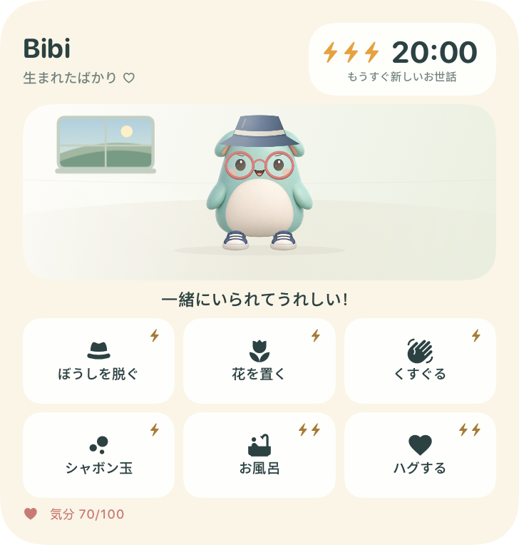

beewbe / iPhone
お世話は、すぐそこに。
ごはんをあげて、遊んで、休ませてあげましょう。お世話はすべてウィジェットの中で。

beewbe
ホーム画面で、自分だけの小さな暮らしを送る仲間。少しのお世話と居心地のよい部屋。そして、また会いに行きたくなる毎日。
iPhone · iOS 27以降 · 開発中beewbe / iPhone
ごはんをあげて、遊んで、休ませてあげましょう。お世話はすべてウィジェットの中で。

beewbe
プレゼントを見つけて、着せ替えを楽しんで、部屋を居心地のよい家に。
ミント
プライバシーポリシー
ゲームはデバイス内に保存。アカウントも広告もなく、遊ぶときにインターネットは不要です。
iPhoneに、小さな世界を
アプリを開いてペットに会い、ウィジェットを追加しましょう。それからは、タップひとつでお世話のひとときを。
少しのお世話が、大きなぬくもりに。
beewbe はオフラインで動作し、アカウント、広告、トラッキングはありません。ゲームのデータは端末に保存されます。
本ポリシーは、beewbeアプリ、ウィジェット、本サイト、および開発者Vlas Laptevへのメッセージに適用されます。
ペットの名前と外見、言語、進行状況、コレクション、絵は端末内に保存されます。アプリとウィジェットは同じセーブデータを使います。beewbe はこのデータを開発者に送信せず、分析や広告の SDK も使用していません。
データは beewbe がインストールされている間、保持されます。端末内のデータを消去するには、iPhone の「設定」で beewbe を削除してください。アプリを取り除く操作やウィジェットの削除では、セーブデータは残ります。
セーブデータは、Apple またはお使いのコンピュータが管理する端末のバックアップに含まれる場合があります。バックアップを復元すると、セーブデータも戻る場合があります。これらのコピーは端末のバックアップ設定で管理できます。
TestFlightでのテスト中、Appleはクラッシュログと利用情報を自動的に収集し、開発者と共有します。送信したフィードバックには、スクリーンショット、コメント、デバイス情報、招待方法に応じた氏名やメールアドレスが含まれる場合があります。これらは問題の調査とbeewbeの改善に使用され、広告には使用せず、他の第三者にも共有しません。Appleによる収集と保存はApple自身が管理します。
Apple：TestFlightとプライバシー ↗Vlas Laptevにメールを送ると、メールアドレス、本文、添付ファイルが返信とサポートに使用されます。メールとベータ版のフィードバックのコピーは、対応や問題調査に必要な期間、または法令で必要な期間のみ保持します。開発者が保持するデータへの質問、アクセス、訂正、削除については、下記のアドレスへご連絡ください。開発者はデバイス内のセーブデータにアクセスできず、Appleが保持するデータを直接削除することもできません。テストはTestFlightで停止できます。
vlas.developer@icloud.comイラストのクレジットにあるリンクをタップした場合にのみ、外部のウェブサイトが開きます。各サイトには独自のプライバシーポリシーが適用されます。
このページ自体はCookie、アクセス解析、広告を使用せず、第三者のフォントやスクリプトも読み込みません。ホスティング事業者はサイトの提供と保護のため、IPアドレス、ブラウザ情報、アクセス時刻などの技術的な情報を処理する場合があります。外部リンク先やメールサービスには、それぞれのプライバシー方針があります。
本ポリシーを変更した場合は、更新した内容と日付をここに掲載します。
開発者 · Vlas Laptev